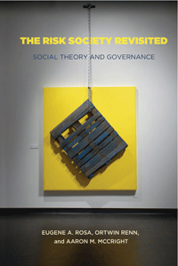

<body bgcolor="#FFFFFF" text="#000000" link="#0000FF" vlink="#CC0000" alink="#CC0000"><center><hr width="350" size="1" align="center" noshade>How risk is a feature in all societies, and its connection to the challenges of sustainability<hr width="350" size="1" align="center" noshade><p><a href="https://cdcshoppingcart.uchicago.edu/Cart/ChicagoBook.aspx?ISBN=9781439902585&&PRESS=temple" target="_top">Buy this book!</a> | <a href="https://cdcshoppingcart.uchicago.edu/Cart/Cart.aspx?PRESS=temple" target="_top">View Cart</a> | <a href="https://cdcshoppingcart.uchicago.edu/Cart/Cart.aspx?PRESS=temple" target="_top">Check Out</a></p><p></p></center><!--none//--><h1>The Risk Society Revisited</h1>
<H2>Social Theory and Governance</H2>
<h3>Eugene A. Rosa, Ortwin Renn and Aaron M. McCright</h3>
<P>cloth 1-4399-0258-5 $60.50, Dec 13, <FONT COLOR=#990033>Available</FONT>
<br>paper 1-4399-0259-3 $29.95, Jul 15, <FONT COLOR=#990033>Available</FONT>
<br>Electronic Book 1-4399-0260-7 $29.95 <FONT COLOR=#990033>Available</FONT>
<BR> 264 pp
6x9
22&nbsp;figures
</P><BLOCKQUOTE><I>"</I>The Risk Society Revisited<I> is innovative, as is the authors� ability to summarize the works of a number of leading European risk theoreticians and apply their ideas to the area of risk governance. This book makes an important contribution to the social theory and risk governance fields."</I>
&#151<b>Ragnar E. L�fstedt</b>, Professor of Risk Management and the Director of King's Centre for Risk Management, King's College London</I></BLOCKQUOTE>
<P>Risk is a part of life. How we handle uncertainty and deal with potential threats influence decision making throughout our lives. In <i>The Risk Society Revisited</i>, Eugene A. Rosa, Ortwin Renn, and Aaron M. McCright offer the first book to present an integrated theory of risk and governance.
<P>The authors examine our sociological understanding of risk and how we reconcile modern human conditions with our handling of risk in our quest for improved quality of life. They build a new framework for understanding risk�one that provides an innovative connection between social theory and the governance of technological and environmental risks, and the sociopolitical challenges they pose for a sustainable future.
<P>Showing how our consciousness affects risk in the decisions we make�as individuals and as members of a democratic society�<I>The Risk Society Revisited</I> makes an important contribution to the literature of risk research.
<BR>&nbsp;<h2>Excerpt</h2><P>Excerpt available at <a href="http://www.temple.edu/tempress">www.temple.edu/tempress</a></p>
<BR>&nbsp;<h2>Reviews</h2>
<p><I>"</I>The Risk Society Revisited<I> is an exceptional book that puts the major scholars on risk and risk society together in a single entity. The surprise addition of J�rgen Habermas is an interesting stroke of genius. This book will be incredibly important for comprehensively engaging these scholars on risk. The authors write clearly and effectively, and their book will become a must-have in the U.S. at least and likely in Europe as well."</I> <br>&#151<b>Steven R. Brechin</b> Professor of Sociology, Maxwell School of Citizenship & Public Affairs, Syracuse University
<p><i>"This book takes an abstract approach to a concrete problem: how authorities assess risk and direct social policy accordingly. The authors assume an underlying consensus over the common social good on which decisions are made. They recognize a conflict between experts who rely on math and sciences, and ordinary citizens who rely on anecdotes, hunches, and folklore, but then imply that the common good will best be achieved if laymen submit to professionals' judgment.... Risk is not an unchangeable fact of life. It is created by someone."</I><br>&#151<b>
<i>CHOICE</b></i>
<p><i>"In the introduction the authors acknowledge the long-term structural and cultural changes that pushed us into a risk society. They argue that since there will always be real risks there is a need for concrete strategies to improve human ability and capacity to manage risk�. The book is timely in providing theoretical support for many calls for more participative approaches in, for instance, risk communication and governance, regional planning, and public policy."</I><br>&#151<b>
<i>American Journal of Sociology</b></i>
<BR>&nbsp;<h2>Contents</h2><P>
<p>Foreword: <i>Risk Society as Political Category</i>, by Ulrich Beck
<br>Preface
<br>Acknowledgments
<p>Introduction: <i>Sketching the Contemporary Era</i>
<p><b>Part I: Social Science Foundations of Risk</b>
<br>1. Meta-Theoretical Foundations
<br>2. An Evolution of Risk: <i>Why Social Science Is Needed to Understand Risk</i>
<p><b>Part II: Risk and Social Theory</b>
<br>3. Overarching Perspective: <i>The Rational Action Framework</i>
<br>4. Reflexive Modernization Theory and Risk: <i>The Work of Ulrich Beck and Anthony Giddens</i>
<br>5. Risk in Systems: <i>The Work of Niklas Luhmann</i>
<br>6. J�rgen Habermas and Risk: <i>An Alternative to RAP?</i>
<p><b>Part III: Risk Governance: Links between Theory and Strategy</b>
<br>7. The Emergence of Systemic Risks
<br>8. The Three Companions of Risk: <i>Complexity, Uncertainty, and Ambiguity</i>
<br>9. Risk Governance: <i>A Synthesis</i>
<br> 10. An Analytic-Deliberative Process: <i>A Proposal for Better Risk Governance</i>
<p>Conclusion: <i>Risk Governance as a Catalyst for Social Theory and Praxis</i>
<p>References
<br>Index
</P><BR>&nbsp;<H2>About the Author(s)</H2>
<P><b>Eugene A. Rosa</b> (1941-2013) was the Edward R. Meyer Distinguished Professor of Natural Resource and Environmental Policy, Professor of Sociology, Affiliated Professor of Fine Arts, and Faculty Associate in the Center for Environmental Research, Education, and Outreach at Washington State University.</P>
<P><b>Ortwin Renn</b> serves as scientific director at the Institute for Advanced Sustainability Studies (IASS) in Potsdam (Germany). He also remains Acting Director of the Stuttgart Research Center for Interdisciplinary Risk and Innovation Studies at the University of Stuttgart (ZIRIUS). Renn continues to direct together with Dr. Marion Dreyer and Agnes Lampke the non-profit company DIALOGIK, a research institute for the investigation of communication and participation processes. Renn is Adjunct Professor for �Integrated Risk Analysis� at Stavanger University (Norway) and Affiliate Professor for �Risk Governance� at Beijing Normal University.</P>
<P><b>Aaron M. McCright</b> is Associate Professor of Sociology in Lyman Briggs College, the Department of Sociology, and the Environmental Science and Policy Program at Michigan State University.</P>
<BR><H2>Subject Categories</H2>
<p><A HREF="/tempress/sociology.html" TARGET="_top">Sociology</a>
<BR><A HREF="/tempress/political.html" TARGET="_top">Political Science and Public Policy</a>
<BR><A HREF="/tempress/nature.html" TARGET="_top">Nature and the Environment</a>
</p>
<p align="center"><a href="https://cdcshoppingcart.uchicago.edu/Cart/ChicagoBook.aspx?ISBN=9781439902585&&PRESS=temple" target="_top">Buy this book!</a> | <a href="https://cdcshoppingcart.uchicago.edu/Cart/Cart.aspx?PRESS=temple" target="_top">View Cart</a> | <a href="https://cdcshoppingcart.uchicago.edu/Cart/Cart.aspx?PRESS=temple" target="_top">Check Out</a></p><p><font face="Arial" size="1"><a href="copyright.html" onMouseOver="window.status='Web Copyright Policy';return true;" onMouseOut="window.status=''" title="Web Copyright Policy">&copy;</a> 2016 <a href="http://www.temple.edu" target="new" onMouseOver="window.status='Link to Temple University home page';return true;" onMouseOut="window.status=''" title="Link to Temple University home page">Temple University</a>. All Rights Reserved. http://www.temple.edu/tempress/titles/2092_reg.html</font></p>